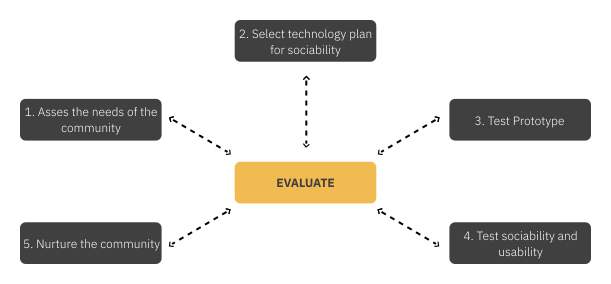
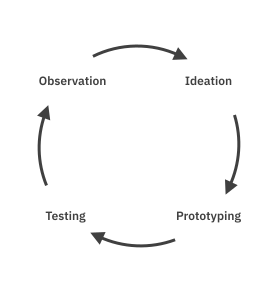
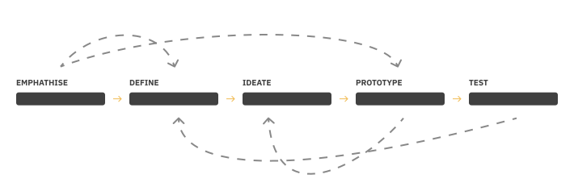

The challenge is to develop an application that tries to increase the user’s participation in team
sports through online communities. Several factors play into the success of this concept. It is not
possible to achieve this goal if the application is not properly designed. To achieve this, design
principles of several disciplines are applied to achieve a user-centric solution.
User Experience Design
The term "user experience" was first coined by Don Norman in the early 1990s when he was working at
Apple (NORMAN, 2013, P. XIII F.). User experience comprises all aspects of a user’s interaction with
a company, its services, and its products. The focus and most important goal of good user experience
is to meet the user’s needs in every aspects. Close cooperation is required between different
disciplines,
such as engineering, marketing, graphic design, industrial design, and interface design (NORMAN &
NIELSEN, N.D.).
»Good design is actually a lot harder to notice than poor design, in part because good designs fit
our needs so
well that the design is invisible, serving us without drawing attention to itself. Bad design, on
the other hand,
screams out its inadequacies, making itself very noticeable.«
User experience captures everything a user experiences while using a given product, from the visuals,
the haptics,
and the audio to how the product feels. User experience of a product comprises three primary factors:
its look,
feel, and usability (IXDF - UX DESIGN, N.D.) (→ FIG. 04).
Look
The “look” satisfies the user’s visual expectations of the product. It is about creating a product that
is visually appealing and conveys the essence of the product to the user. In addition to pure
aesthetics, it is also important that the content is communicated simply and understandably. Therefore,
it is not only important how the product looks like but also how information is presented.
Feel
The “feel” is about creating products that are not only functional but also fun to use. It is important
that it is a pleasant and intuitive experience when interacting with the product on a daily basis.
Usability
Usability is the cornerstone of user experience because if a product is difficult to use, the experience
of using it will never be positive. Products should be designed to meet the needs of the user, and the
product’s functions should be predictable for the user.
FIG. 04: PRIMARY FACTORS OF USER EXPERIENCE OWN ILLUSTRATION BASED ON IXDF - USABILITY, 2020
User Experience Design requires a solid understanding of the psychology and behavior of the user.
Understanding
how users perceive a product allows user experience designers to iterate their concepts and better
achieve the
user’s goals. According to Marc Hassenzahl and Sarah Diefenbach’s paper *Well-being*, *Need
Fulfillment*, and
*Experience Design*, any positive experience is based on meeting psychological needs. The fulfillment of
psychological
needs, such as competence, relatedness, popularity, stimulation and security, contributes to the
well-being of the
user and leads to a pleasant user experience. In experience design, these needs are taken as guidelines
and inspiration
in the design process (HASSENZAHL & DIEFENBACH, 2012, P. 1).
Some of these needs have already been discussed in Chapter 2.1, but in the following, they are
considered from the
perspective of emotion, while additional needs are addressed.
Competence
Competence is the feeling that one’s actions are perceived as capable and effective instead of thinking
that one is
incapable and incompetent (HASSENZAHL & DIEFENBACH, 2012, P. 1).
Relatedness
Relatedness is the feeling of having intimate and personal relationships with the people in the
environment,
rather than feeling lonely or unnoticed (HASSENZAHL & DIEFENBACH, 2012, P. 1).
Popularity
Popularity is the feeling of being respected and influencing others, rather than feeling like a person
whose
advice and opinion are ignored (HASSENZAHL & DIEFENBACH, 2012, P. 1).
Stimulation
Stimulation is the feeling of experiencing much of joy and pleasure instead of feeling bored and
understimulated
(HASSENZAHL & DIEFENBACH, 2012, P. 1).
Security
Security is the feeling of having stability and control over one’s own life, rather than feeling
uncertain and
threatened by circumstances one cannot control (HASSENZAHL & DIEFENBACH, 2012, P. 1).
As discussed in Chapter 2.1, the social aspect is an important factor in motivating people to
participate in
various activities. Thus, it is also an important factor for participation in sports. Since this thesis
addresses
the question of how online sports community apps should be designed to increase the user’s participation
in team
sports, the focus during the design phase is laid especially on relatedness.
In the context of user experience design, needs are also called “user needs”. In addition to the
approach of
Hassenzahl and Diefenbach, other approaches define user needs for good user experience. Design leader
Stephen P. Anderson, for example, developed the “User Experience Hierarchy of Needs” model (→ FIG. 05).
Rather than focusing on the psychological side of the user needs, this model is based on a product’s
maturity process.
Anderson proposes that products proceed through six stages of maturity, during which they can grow from
a purely
functional product, to a product that is meaningful to the user (ANDERSON, 2011, P. 10F.).
Main Foucs
Need
Note
Experience
Meaningful
personal significance
Pleasurable
memorable experiences
Convinient
super easy to use, works like I think
Tasks
Usable
can be used without difficulty
Reliable
is available and accurate
Functional
works as programmed
Design Methods
After discussing the design principles necessary for a good user experience, this section elaborates on specific ways to approach the design process.
Community-Centered Design
It is important to provide members within a community the opportunity to interact with each other (PREECES, 2004, P. 3FF). According to Preece, developing online communities is different from designing software as software, once shipped, is stable and does not change until the next update while online communities develop and change through dynamic interactions. It is first and foremost a social experience that changes according to who is participating, the number of people involved, and the type of discussion that takes place (IBID., P.4). For example, the dynamics between new and long-established communities differ notably. While the software might not change drastically, social interactions will adapt according to the growth of the community. This social adaption is called “sociability” (IBID.). In many online communities, these social changes are at least as influential as software changes. Therefore, crucial to not only focus on the usability of the design but also on sociability. Therefore, knowledge from different disciplines such as sociology, social psychology, anthropology, as well as user-centered design is required (IBID.). In participatory community-centered design methodology (→ FIG. 07), members of the community are involved in the design process from the beginning. In community-centered design, six phases are each followed by an evaluation period and iterations based on the findings.

FIG. 07: Community-Centered Design Process own Illustration based on Preece, 2004
Assess the Needs of the Community
The first step involves understanding the community. This means understanding the community’s needs. It is important to understand who the members of the community are and what the main purpose of the community is. It is about understanding for whom this community exists and what the participants’ habits are (PREECE, 2004, P. 4).
Select a Technology Plan for Sociability
After understanding the potential members of the community, it is important to select the technology for communication within the community. Suitable mediums, such as timelines, discussion boards, or chat areas, must be discussed and the software should be tailored to suit the needs of the community (PREECE, 2004, P. 4F.).
Test Prototype
Step three requires testing of the prototype with the potential members of the community. The intended software and sociability structures need to be validated at a basic level. This validation includes the representation of social policies and social interactions. For example, if members must complete a registration policy before joining the community, its comprehensibility must be ensured. In this step, iterative changes are made according to the user feedback (PREECE, 2004, P. 5).
Test Sociability and Usability
Step four extends the testing made in step three and focuses on validating the design choices for good user experience and sociability. The usability, user interface, and the feel of the interaction are tested with the user. At this stage, substantial emphasis is laid on the overall user experience. (PREECE, 2004, P. 5).
Nurture the Community
After establishing the basis for the online community, the final step consists of nurturing the community. It is the most important process as long as the community exists, since nurturing the community allows new members to feel welcomed and supported, thus enabling growth. Furthermore, the community must be well advertised, so that this growth can continue over a long period of time (PREECE, 2004, P. 5F.)
A community-centered design process is crucial to a community’s life cycle, as it ensures that members of respective communities are heard. This assurance allows the design to adapt and change based on their ideas, desires, and needs. Designing for online communities is iterative by nature and should reflect the community’s evolution (IBID., P. 6).
Human-Centered Design
A design process can be approached in numerous ways. The previously mentioned community-centered design process is tailored specifically towards online communities and how members interact with each other. The problem, however, is that factoring in the unanimous behavior of a large group may result in neglect of an individual’s personal experience with the product. A more personal and empathetic approach is that of human-centered design (HCD). HCD factors in the emotional and psychological preferences of the individual. According to Norman, this approach that “puts human needs, capabilities, and behavior first, then designs to accommodate those needs, capabilities, and ways of behaving” (NORMAN, 2013, P. 8). HCD puts the individual experience with the product first, considering the whole user experience (IXDF - UCD, N.D.). Norman describes HCD as a philosophy that starts with understanding humans and their needs and difficulties through observation. Since people often do not realize their own needs, it is the designers’ responsibility to observe and define them (NORMAN, 2013, P. 9). There are four different phases in HCD (→ FIG. 08).

FIG. 08: Human-Centered Design Process own Illustration based on Norman, 2013, p. 222
Observation
Observation is the phase in which the user’s situation and the underlying problem that needs to be solved are researched by the designers. To understand the people for whom the solution is intended, one must observe them in their daily lives to fully understand their environment, the daily problems they encounter, and their goals. Furthermore, the current market offer is explored to determine how the problem has been approached by others (NORMAN, 2013, P. 222F.).
Ideation
Through ideation, potential solutions for the given problem are explored. Based on the insights gained in the research phase, various ideas are accumulated to select the best solution for the given problem. It is important that no idea is discarded or focused on too early, as creative variety is the essence of ideation (NORMAN, 2013, P. 226).
Prototyping
After the ideas are prototyped, they become tangible so that they can be tested later. Since feedback is crucial in the early stages of the design process, prototypes contain only the core functionality of the product with the relevant components that need validation. Prototypes demonstrate the real product (NORMAN, 2013, P. 227F.).
Testing
Testing the prototypes with real users who correspond closely to the target demographic uncovers weaknesses and strengths of the concept. Assumptions made up to this point can be confirmed or refuted. Furthermore, the insights gathered throughout this phase are used to shape the subsequent iterations, thus improving the solution in the process (NORMAN, 2013, P. 228F.).
These four phases are repeated constantly until the solution fulfills potential. HCD is an iterative process in which each iteration produces more insight, bringing the solution closer to its goal. The result is a product that resonates more deeply with the target audience (NORMAN, 2013 P. 229F.). HCD might also be called user-centered design (W3C - UCD, N.D.).
» Human-centered design is a philosophy, not a precise set of methods, but one that
assumes that innovation should start by getting close to users and observing their
activities. «
Design Thinking

FIG. 09: Design Thinking Process own Illustration based on D.School, N.D.
Design thinking is a process that, similarly to HCD, is centered on the user. The difference, however, lies in its end goal. HCD is a creative approach that solves known problems by gaining a deep understanding of and empathy for the target demographic (IDEO, N.D.). According to Michael Burmester, the ultimate goal of HCD is to ensure high usability and good user experience with digital interfaces (BURMESTER, 2016). Design thinking, on the other hand, is a more general approach to innovation that is not restricted to digital products. It, thus, has a far wider range of application. According to IDEO, the end goal of design thinking is the creation of innovative products that allow “people [to] find the sweet spot of feasibility, viability and desirability while considering the real needs and desires of people” (IDEO, N.D.). Similar to HCD, design thinking is not to be seen as a process or system that must be followed in a certain way but rather as a philosophy or mindset for how to approach human issues (AJ&SMART, 2018). According to the Hasso-Plattner-Institute of Design at Stanford (d.school), design thinking can be divided into five phases: empathize, define, ideate, prototype, and test (D.SCHOOL, N.D.) (→ FIG. 08).